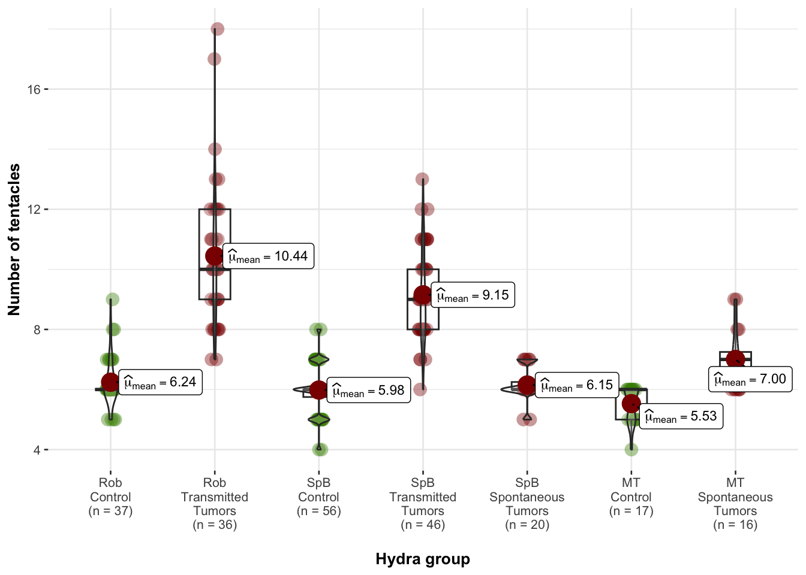
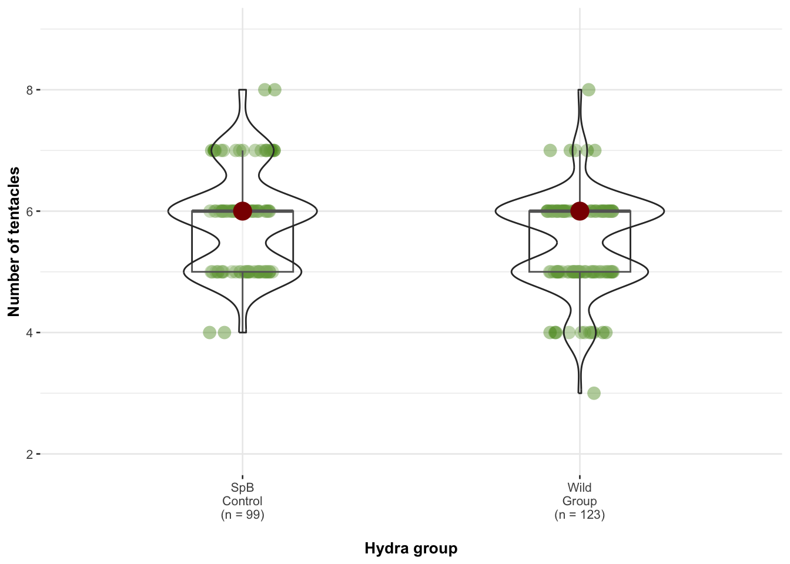

Analysis of the tentacules numbers of donor and recipient hydras
Comparisions between tumorous and non-tumorous of each donor lineages
We calculated the differences between tumors and non-tumors within each
line using Wilcox tests.
wilcox.test(data_1$donor_tentacle[data_1$group=="RobNT"], data_1$donor_tentacle[data_1$group=="RobT"])##
## Wilcoxon rank sum test with continuity correction
##
## data: data_1$donor_tentacle[data_1$group == "RobNT"] and data_1$donor_tentacle[data_1$group == "RobT"]
## W = 27, p-value = 6.361e-13
## alternative hypothesis: true location shift is not equal to 0wilcox.test(data_1$donor_tentacle[data_1$group=="SpBNT"], data_1$donor_tentacle[data_1$group=="SpBT"])##
## Wilcoxon rank sum test with continuity correction
##
## data: data_1$donor_tentacle[data_1$group == "SpBNT"] and data_1$donor_tentacle[data_1$group == "SpBT"]
## W = 64, p-value < 2.2e-16
## alternative hypothesis: true location shift is not equal to 0wilcox.test(data_1$donor_tentacle[data_1$group=="SpBNT"], data_1$donor_tentacle[data_1$group=="SpB_spontT"])##
## Wilcoxon rank sum test with continuity correction
##
## data: data_1$donor_tentacle[data_1$group == "SpBNT"] and data_1$donor_tentacle[data_1$group == "SpB_spontT"]
## W = 491, p-value = 0.371
## alternative hypothesis: true location shift is not equal to 0wilcox.test(data_1$donor_tentacle[data_1$group=="MTNT"], data_1$donor_tentacle[data_1$group=="MTT"])##
## Wilcoxon rank sum test with continuity correction
##
## data: data_1$donor_tentacle[data_1$group == "MTNT"] and data_1$donor_tentacle[data_1$group == "MTT"]
## W = 30, p-value = 4.819e-05
## alternative hypothesis: true location shift is not equal to 0Graph of number of tentacles in donor lines

Graph of number of tentacles in recipient lines

Analysis of the variation of the number of tentacles after grafting
Transmissible tumors dataset
Random effects selection
donor_trans <- subset(donor_trans, donor_trans$diff_maxR!="NA")
m1 <- glmmTMB(data=donor_trans, diff_maxR+2 ~ donor +donor_status + receiver + donor_tentacle + receiver_tentacle + (1|lot) + (1|date_draft), family = poisson, REML = T)
m2 <- glmmTMB(data=donor_trans, diff_maxR+2 ~ donor +donor_status + receiver + donor_tentacle + receiver_tentacle + (1|date_draft/lot), family = poisson, REML = T)
m3 <- glmmTMB(data=donor_trans, diff_maxR+2 ~ donor +donor_status + receiver + donor_tentacle + receiver_tentacle + (1|lot), family = poisson, REML = T)
m4 <- glmmTMB(data=donor_trans, diff_maxR+2 ~ donor +donor_status + receiver + donor_tentacle + receiver_tentacle + (1|date_draft), family = poisson, REML = T)
m5 <- glmmTMB(data=donor_trans, diff_maxR+2 ~ donor +donor_status + receiver + donor_tentacle + receiver_tentacle, family = poisson, REML = T)
AICc(m1, m2, m3, m4, m5) ## df AICc
## m1 8 621.6455
## m2 8 621.6455
## m3 7 620.2526
## m4 7 619.4657
## m5 6 620.6635
There is no need to include any of the potential random effects that
have been measured.
Fixed effects selection
Given the number of potential effects to evaluate, we have opted for an
automatic selection of fixed effects
options(na.action = "na.omit")
mT_trans_full = glmmTMB(data=donor_trans, diff_maxR+2 ~ donor * donor_status * receiver + receiver_tentacle + donor_tentacle, family = poisson, REML = F)
options(na.action = "na.fail")
dd2 = dredge(mT_trans_full, rank = "AICc")## Fixed terms are "cond((Int))" and "disp((Int))"Table of the results of the best fitted models (lower AICc+2)
| diff_maxR + 2 | diff_maxR + 2 | diff_maxR + 2 | |||||||
|---|---|---|---|---|---|---|---|---|---|
| Predictors | Incidence Rate Ratios | CI | p | Incidence Rate Ratios | CI | p | Incidence Rate Ratios | CI | p |
| donor [Rob] | 1.26 | 0.84 – 1.87 | 0.263 | ||||||
| donor status [T] | 1.82 | 1.28 – 2.58 | 0.001 | 1.43 | 1.20 – 1.72 | <0.001 | 1.45 | 1.21 – 1.73 | <0.001 |
| receiver [TV] | 0.92 | 0.64 – 1.32 | 0.661 | 0.86 | 0.72 – 1.04 | 0.114 | |||
| receiver tentacle | 0.83 | 0.74 – 0.93 | 0.001 | 0.81 | 0.73 – 0.91 | <0.001 | 0.83 | 0.74 – 0.93 | 0.001 |
|
donor status [T] × receiver [TV] |
0.74 | 0.46 – 1.19 | 0.219 | ||||||
|
donor [Rob] × donor status [T] |
0.47 | 0.28 – 0.80 | 0.006 | ||||||
|
donor [Rob] × receiver [TV] |
0.76 | 0.44 – 1.31 | 0.325 | ||||||
|
(donor [Rob] × donor status [T]) × receiver [TV] |
2.75 | 1.32 – 5.75 | 0.007 | ||||||
| Observations | 160 | 160 | 160 | ||||||
best_model_tentaTrans <- glmmTMB(data=donor_trans,diff_maxR+2 ~ donor_status + receiver_tentacle, family = poisson, REML = T)
tab_model(best_model_tentaTrans, show.intercept = F, show.r2=F)| diff_maxR + 2 | |||
|---|---|---|---|
| Predictors | Incidence Rate Ratios | CI | p |
| donor status [T] | 1.45 | 1.21 – 1.73 | <0.001 |
| receiver tentacle | 0.83 | 0.74 – 0.93 | 0.001 |
| Observations | 160 | ||
On average, a individual who received a transplant of tumorous tissue developed 1.45 more tentacles compared to those who received healthy tissue and developed only one tentacle. Furthermore, individuals with a high number of tentacles prior to transplantation experienced a reduced increase in the number of tentacles after the procedure (IRR=0.83 [0.74 - 0.93], p=0.001), suggesting a possible threshold effect.
simulateResiduals(best_model_tentaTrans, plot=T)
The model is not perfectly balanced, however changing to another family
such as negative binomial or zero-truncated does not significantly
enhance the quality of the models or their outcomes.
Spontaneous tumors dataset
Random effects selection
donor_spont <- subset(donor_spont, donor_spont$diff_maxR!="NA")
m1 <- glmmTMB(data=donor_trans, diff_maxR+2 ~ donor + Tumors +donor_status + receiver + donor_tentacle + receiver_tentacle + (1|lot) + (1|date_draft), family = poisson, REML = T)
m2 <- glmmTMB(data=donor_trans, diff_maxR+2 ~ donor + Tumors +donor_status + receiver + donor_tentacle + receiver_tentacle + (1|date_draft/lot), family = poisson, REML = T)
m3 <- glmmTMB(data=donor_trans, diff_maxR+2 ~ donor + Tumors +donor_status + receiver + donor_tentacle + receiver_tentacle + (1|lot), family = poisson, REML = T)
m4 <- glmmTMB(data=donor_trans, diff_maxR+2 ~ donor + Tumors +donor_status + receiver + donor_tentacle + receiver_tentacle + (1|date_draft), family = poisson, REML = T)
m5 <- glmmTMB(data=donor_trans, diff_maxR+2 ~ donor + Tumors +donor_status + receiver + donor_tentacle + receiver_tentacle, family = poisson, REML = T)
AICc(m1, m2, m3, m4, m5) ## df AICc
## m1 9 616.8626
## m2 9 616.8626
## m3 8 615.5684
## m4 8 614.6162
## m5 7 614.7731
There is no need to include any of the potential random effects that
have been measured.
Fixed effects selection
Given the number of potential effects to evaluate, we have opted for an
automatic selection of fixed effects
options(na.action = "na.omit")
mT_spont_full = glmmTMB(data=donor_spont, diff_maxR+2 ~ donor * donor_status * receiver + receiver_tentacle +donor_tentacle, family = poisson)
options(na.action = "na.fail")
dd = dredge(mT_spont_full, rank = "AICc")## Fixed terms are "cond((Int))" and "disp((Int))"Table of the results of the best fitted models (lower AICc+2)
| diff_maxR + 2 | diff_maxR + 2 | diff_maxR + 2 | diff_maxR + 2 | diff_maxR + 2 | |||||||||||
|---|---|---|---|---|---|---|---|---|---|---|---|---|---|---|---|
| Predictors | Incidence Rate Ratios | CI | p | Incidence Rate Ratios | CI | p | Incidence Rate Ratios | CI | p | Incidence Rate Ratios | CI | p | Incidence Rate Ratios | CI | p |
| receiver [TV] | 0.88 | 0.68 – 1.13 | 0.302 | ||||||||||||
| receiver tentacle | 0.94 | 0.81 – 1.10 | 0.440 | ||||||||||||
| donor [MT] | 0.91 | 0.69 – 1.19 | 0.498 | ||||||||||||
| donor tentacle | 0.96 | 0.84 – 1.10 | 0.579 | ||||||||||||
| Observations | 100 | 100 | 100 | 100 | 100 | ||||||||||
best_model_tentaSpont <- glmmTMB(data=donor_spont,diff_maxR+2 ~ 1, family = poisson, REML = T)
tab_model(best_model_tentaSpont, show.intercept = F, show.r2=F)| diff_maxR + 2 | |||
|---|---|---|---|
| Predictors | Incidence Rate Ratios | CI | p |
| NA | NA | NA | NA |
| Observations | 100 | ||
None of the factors assessed had a notable effect on the variability of the tentacle count following transplantation within this group.